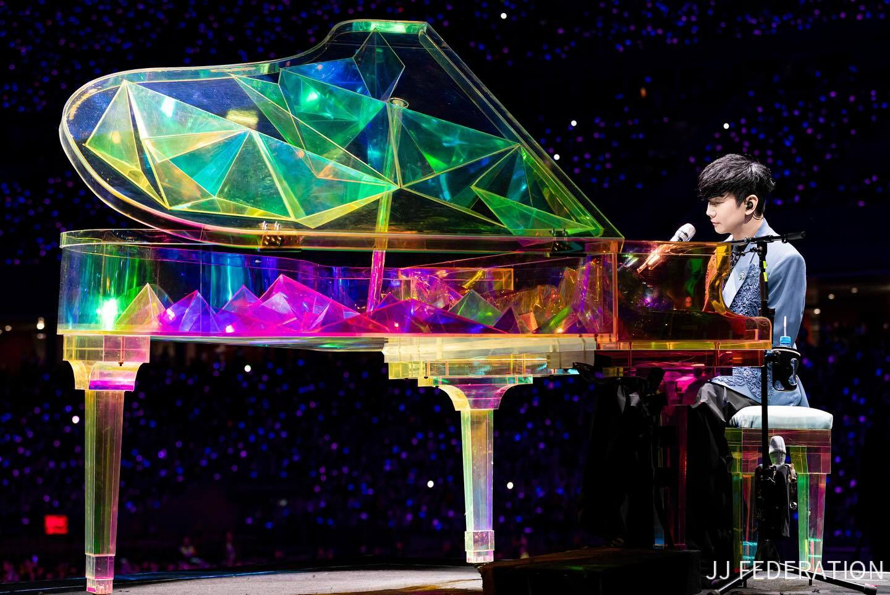

"I spend a lot of time dreaming, not day-dreaming, but thinking about who I could be, I think that keeps me alive."
| Born | 27 March 1981 (Age 42) Singapore |
| Occupations | Singer, Songwriter, Record producer, Actor |
| Genres | Mandopop, Dance-pop, Chinese rock, R&B |
| Instruments | Vocals, Piano, Guitar |
| Labels | Ocean Butterflies, Warner, JFJ Productions |
| 樂行者 | Music Voyager (2003) |
| 第二天堂 | The JJ Haven (2004) |
| 編號89757 | No.89757 (2005) |
| 曹操 | Cao Cao (2006) |
| 西界 | West Side (2007) |
| JJ陸 | Sixology (2008) |
| 100天 | Hundred Days (2009) |
| 她說 概念自選輯 |
She Says (2010) |
| 學不會 | Lost N Found (2011) |
| 因你 而在 | Stories Untold (2013) |
| 新地球 | Genesis (2014) |
| 和自己對話 | From M.E. To Myself (2015) |
| 偉大的渺小 | Message in A Bottle (2017) |
| 倖存者 • 如你 | Drifter • Like You Do (2020) |
| 重拾＿快樂 | Happily, Painfully After (2023) |